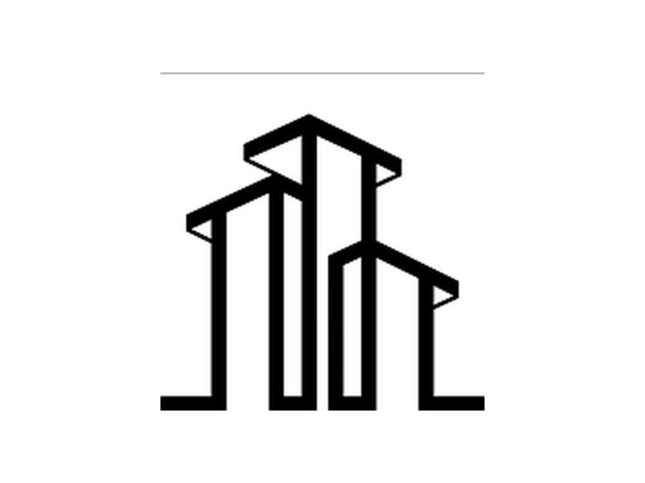
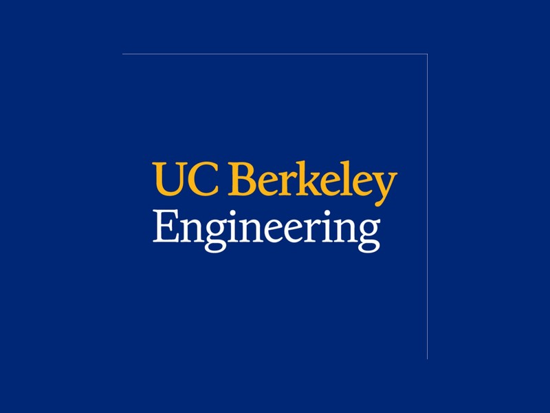
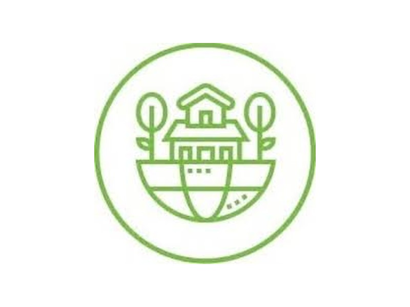
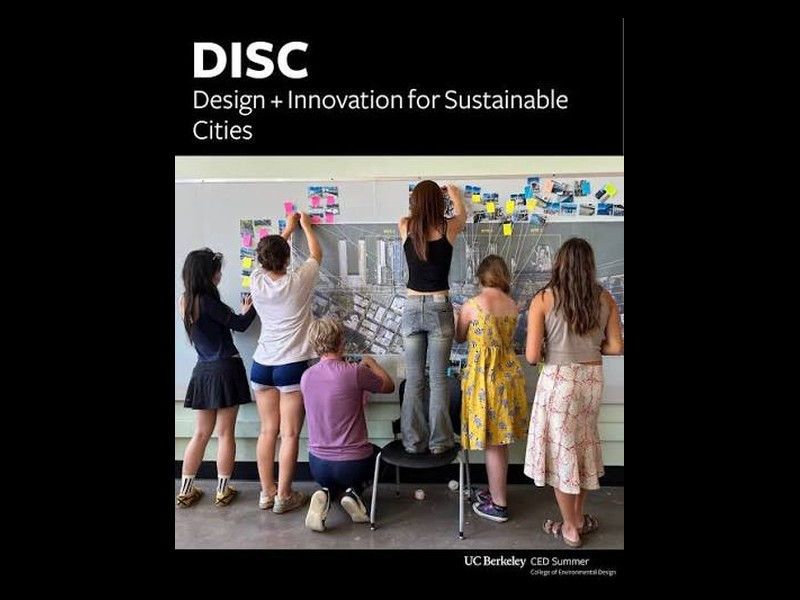

Experience
Selected work

City Structural, Inc. Design Engineer Intern Soft-story seismic retrofit Producing the plan sets, calculations and permitting documents for a mandatory retrofit in Oakland. View project
Gu Research Group, UC Berkeley Research Assistant Coral hydrodynamics and fabrication Measuring how coral shape changes drag and flow, then checking a damping setting the whole group had inherited. View project
Cal Sustainable Solutions (ASCE) Water Specialist Campanile Commons Modeling a mixed-use development, then moving the solar array when the roof load did not work. View project
Design and Innovation for Sustainable Cities Summer Design Cohort El Cerrito BART redevelopment Site analysis for transit-oriented redevelopment, presented in formal design reviews. View projectAbout
A bit more
I am a third year at UC Berkeley studying Environmental Engineering Science with a minor in Conservation and Resource Studies, graduating in May 2028.
Most of what I do falls into three places. I am a design engineer intern at City Structural in San Francisco, where I produce drawing sets and the calculations and documentation behind them. I do research in the Gu Research Group, modeling how water moves around submerged structures. And I am the water specialist on Cal Sustainable Solutions, Berkeley's ASCE competition team, where I own the water and environment scope of a proposal we then have to defend in front of judges.
I also work as a civil engineering AI trainer, writing engineering problems used to train and evaluate AI models and checking their answers against what the right answer should be. It has made me a lot more specific about which parts of a technical workflow a model can be trusted with and which ones still need a person.
The thread through all of it is water. What I like most is the beginning of a project, when the problem is not defined yet and you have to work out what is actually being asked before you can solve anything.
Tools
- Drawing and modeling: AutoCAD, SketchUp, Layout, Rhinoceros 8, Twinmotion
- Analysis: MATLAB, Python, SPHinXsys, Microsoft Excel
- Coursework: water chemistry, environmental engineering, fluid mechanics, thermodynamics